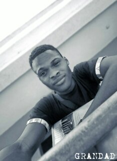

HOME

BIOGRAPHY
My name is SANNI MUHAMMED MAYOWA,i was born on the 1st of November,199* in Ajegunle,Lagos State Nigeria. to a Family of MR & MRS SANNI
and am also the first born of the family,Am a native of Balogun fulani,kwara state but rise and brought up in Lagos state.
i attend both my primary and secondary school in Florence Day School Abule Tutun,Lagos state.Going to this school really happy me academically,i graduated at year 2014.
and further more as and Under Graduate in Kwara State University studing Computer Science.
I dont really have best food but there are some foods i love to take like Beans and Pantain,Plantain and Egg,Rice and Beans and fanily Pounded Yam with Vegetable soup.
i love taking Apple and Banana also.
My best color is Yellow,White and Black. but i prefer the combination of White and Black for my Outfit.I love to be around my Love Ones to have fun and gist,not the party type
but attend some when neccesary especially when invited from a very important and love person.Am also the type that loves girl but always careful of my self of those i keep around me,because
am really not the type that has enough Male friends but cool with those i do.
Furthermore,before gaining admission into KWASU,i discover some little talent which i decide to bring out of me(Lamp Making using wood) and i also learn some hand work so as
not to depend on my certificate alone and having the dream of becoming a CEO myself and with that i have the grace to have a small company now GRANDAD FOOTWEAR were i make all
kind of footie for both Male and Female,Giving a value to their feet and as a young CEO this have make me to achieve something from a lot of people and even change some people
thinking towards me andis also give me a little opportunity to meet and work for people i never think i will and this never gave me the chance to relent rather to work hard and keep
praying for GRACE.
Also as a human being i have my dislikes also which most of the people close to me know few for those care too and one of it is someone taking me for granted or fooling themselves thinking
they are fooling me,no one love lies and and i hate that also and everyone has their past meaning the little opportunity i have now does not come easy because as a kid have faced a lot of
challenges but some GRATEFUL ALMIGHTY ALLAH never let me down.
PATRONISE US NOW
By Clicking The Link Below To Check Our Product And Their Price Tag